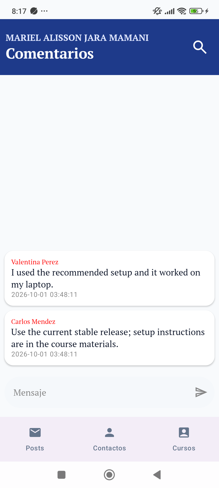
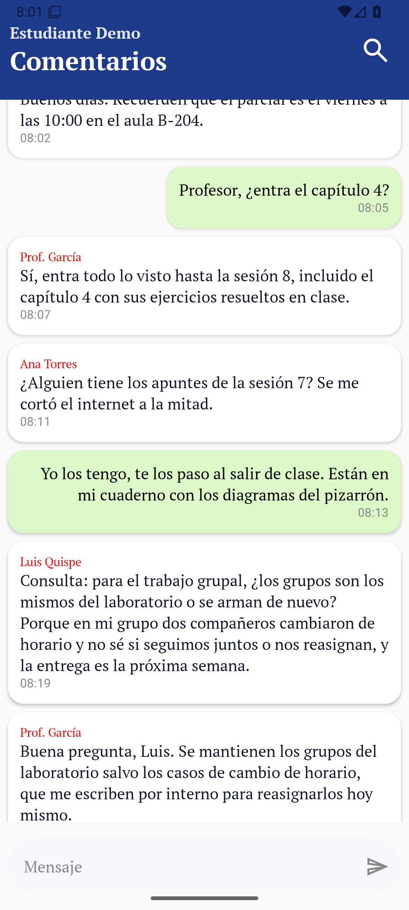
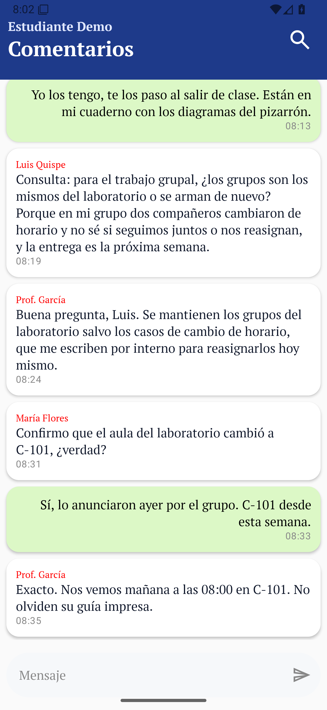
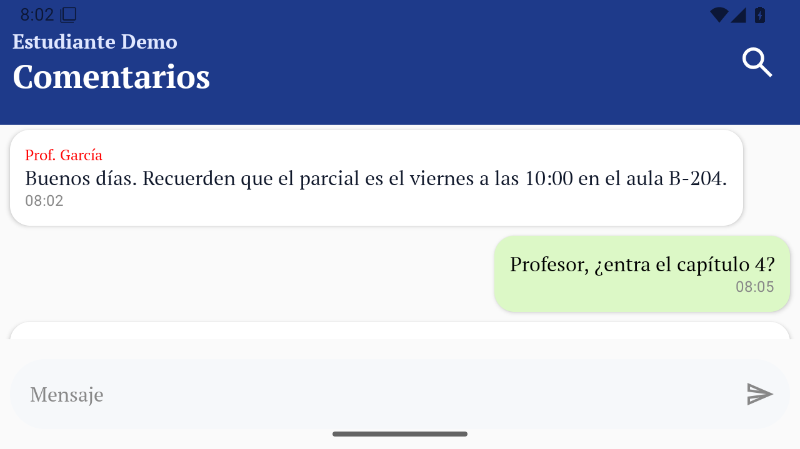
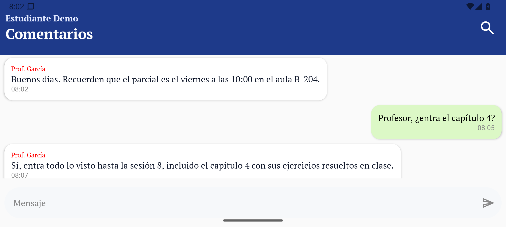
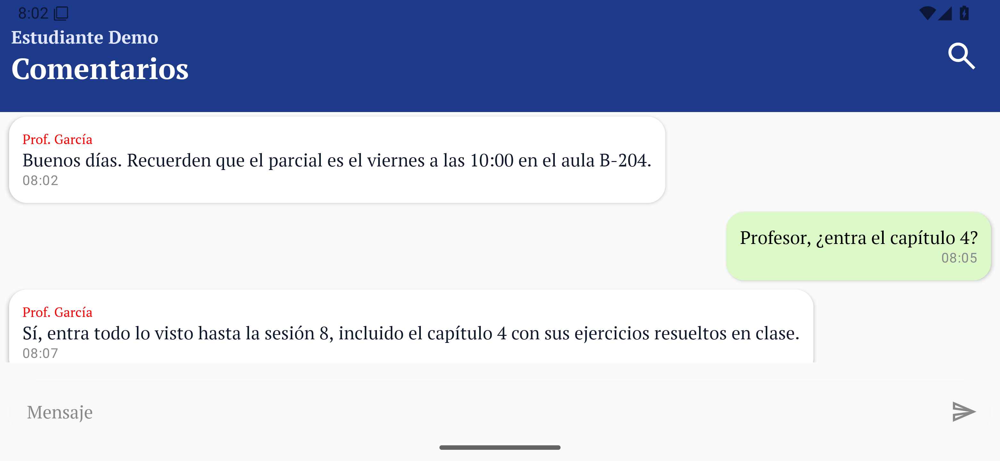
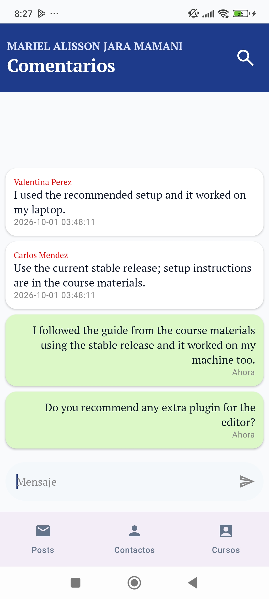
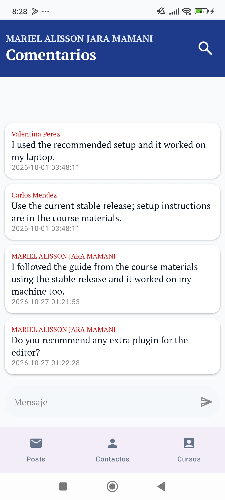

Layouts que
se adaptan
LazyColumn con weight(1f) y reverseLayout
Probado en tres tamaños en dos orientaciones. Seis capturas, dos
decisiones, una mejora mínima.

Una pantalla, tres piezas, cero medidas a mano
Árbol de la pantalla
Column(fillMaxSize) SearchBoxComponent LazyColumn(weight 1f, reverseLayout) Box > Surface > Column Row(Mensaje y Enviar · maxLines 5)
Lo importante
El weight(1f) estira la lista y deja ~60 % de vacío arriba cuando hay 2 mensajes: contenedor lleno, contenido abajo por el reverseLayout. Con N grande, LazyColumn solo compone lo visible.
Peso automático frente a dp fijos
Actual: LazyColumn con weight y reverseLayout
- Reparte el alto sobrante, sin constantes por pantalla
- Virtualiza el hilo: barata con lista larga
- Orden de chat nativo, campo siempre visible
Descartada: Column con scroll y alturas fijas
- Cada tamaño y giro pide otro dp
- Compone todo el hilo: costo con N grande
- Orden y scroll del chat, a mano
Seis escenarios, un solo comportamiento





Arriba en vertical, abajo en horizontal. De izquierda a derecha: teléfono pequeño, mediano y grande. En horizontal solo se reduce el alto visible; textos, burbujas y controles siguen intactos.
El alto sobrante se reparte solo
Qué lo explica
weight(1f) da a la lista todo menos cabecera y campo. Pequeño vs. grande solo cambia densidad y aire, no la estructura.
Descartado
dp fijos por configuración, ramas con BoxWithConstraints y 2 paneles con WindowSizeClass: sobran para un hilo lineal.
El borde: teclado y vacío
// ANTES — import imePadding sin usar Row(Modifier.fillMaxWidth() .padding(vertical = 8.dp)) // DESPUÉS Row(Modifier.fillMaxWidth() .padding(vertical = 8.dp) .imePadding()) // teclado no tapa Enviar LazyColumn(... contentPadding = 8.dp)


Medir menos, repartir más
Peso antes que dp
weight(1f) absorbe cabecera, lista y teclado sin constantes por pantalla.
Virtualizar el hilo
LazyColumn con reverseLayout: chat barato con lista larga y orden nativo.
Atacar el borde
El fallo real era el teclado: imePadding y contentPadding lo cierran en dos líneas.